sent browser to browser
howlden is a den for you and your friends: text and voice channels, video and screen share, right in your browser. No email, no password, no phone. Invite your pack with a link or a QR code and everything flows straight between you, end to end encrypted.
Free and open source. Desktop and phone. A den for two, or a pack of up to 5.
is typing
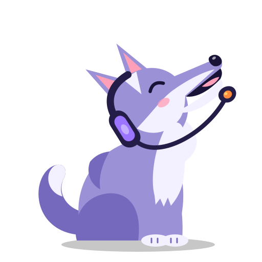
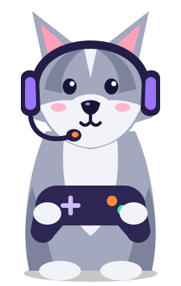
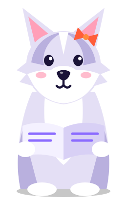
A live preview: click the channels, react, mute yourself or type a message.
Text channels
Text channels with bold, italic, spoilers, code and quotes. Reply to a friend, mention the whole pack, react with a howl or a campfire, drop a file that goes straight from your browser to theirs. It all feels like the chat app you know, minus the company in the middle.
Chat without signing upVoice channels
Voice channels are campfires that never go out. See which wolves are already howling, click to sit down, click to leave. No ringing, no meeting links, no scheduling. Mute and deafen are one click away, and a call works just as well with one friend as with the whole pack.
Voice chat with no downloadMembers
The member list shows which wolves are in the den, who is howling in voice, who is sharing a screen and who wandered off. A den holds up to 5, invite only, so every name on the list is someone you let in.
Why a den holds 8Your account
No email, no password, no phone number. Pick a username and an avatar and your browser makes a signing key pair that never leaves your device. Your tag, like luna#7c1f, comes from that key, so friends know it is really you. There is no server to reset it, sell it or leak it from.
Invite only
There is no server to introduce you, so friends introduce themselves: one link out, one reply code back. That is the whole handshake.
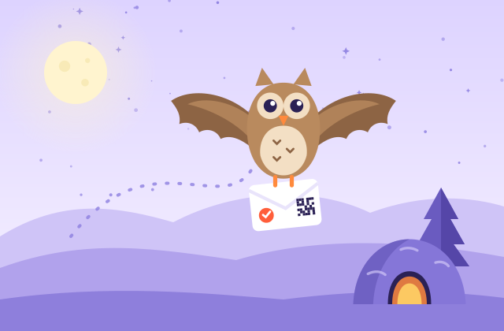
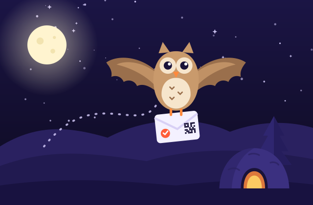
Click Invite in your den and howlden shows six words, plus a small QR code. Read them out on a call or send them in any messenger.
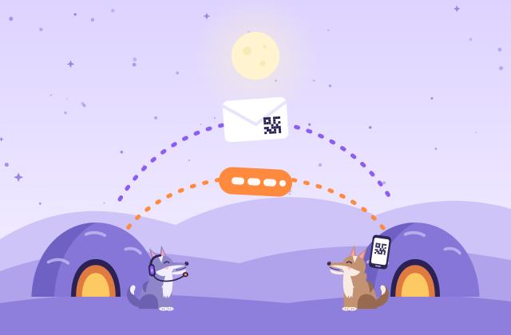
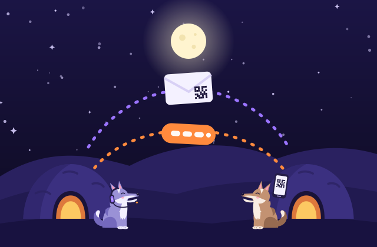
The six words find your den through public relays that only ever see an encrypted handshake. Nothing to send back, and the words expire in ten minutes.
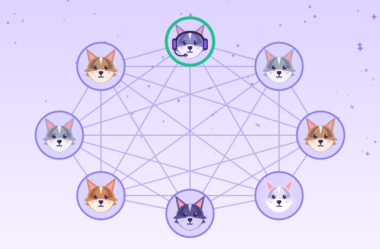
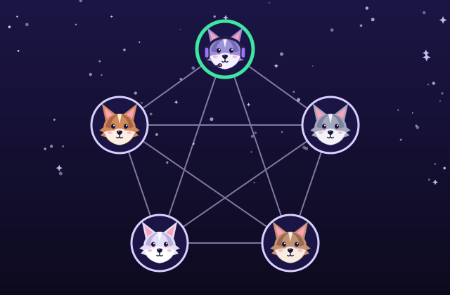
Type the six confirmation words your friend sees and they are in. Known friends are let in on their verified key. Then chat, voice and files go device to device.
A real QR code drawn by howlden's own encoder. This one opens the app.
Invites and replies are compressed so they fit in a link and a QR code. Share them through any messenger you already trust, show the QR on your screen for someone in the room, or paste the code by hand. Your friend never sees anything technical.
Why it is private
Most chat apps send every message through a company's servers. A howlden den is a small circle of browsers talking to each other. Here is exactly what that means, with no fine print.
There is no howlden backend, database or account system. No server of ours ever sees your messages, voice, video or files. This website is static files.
Every connection is encrypted end to end with DTLS, and audio and video with SRTP. It is built into the browser and cannot be switched off.
The six word handshake travels encrypted through public relays (EMQX, HiveMQ, Mosquitto) that cannot read it, and a TURN relay, when a strict network needs one, only forwards encrypted packets. Prefer zero third parties? Use invite links instead.
No email, no phone number, no profile in the cloud. Your profile, settings and dens live in your own browser.
Give a den a passphrase for a second layer: PBKDF2 derives an AES-GCM key, so only members who know it can read messages and files.
howlden shows a short connection fingerprint. Read it aloud on a call: if both sides see the same code, nobody is in the middle.
Honest note: private is not the same as anonymous. Members of a den connect directly, so they can see each other's network address, and your security still depends on your device and your browser.
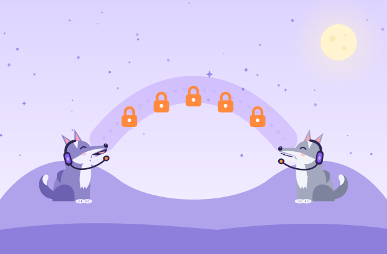
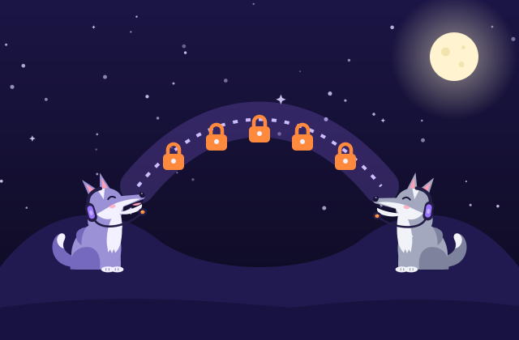
YouFriend
howlden: browser to browser, encrypted
YouNo server of oursFriend
There is simply no box in the middle to store or read anything.
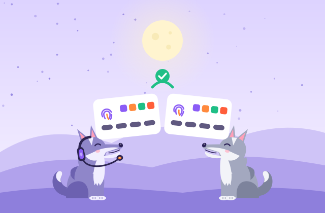
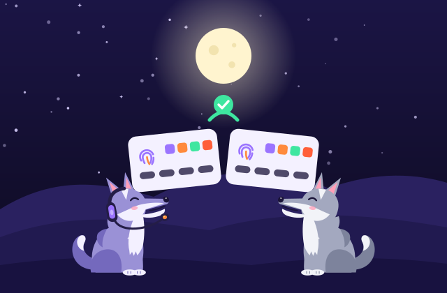
Use cases
Small groups of people who know each other are where howlden shines.
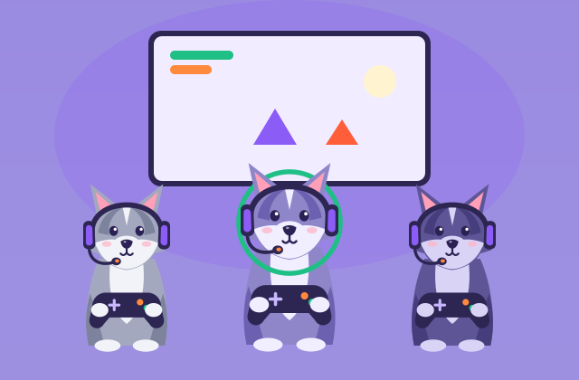
Hop into voice before the match, share your screen for the strategy and keep the memes in a text channel. Nothing to install for the friend with the new laptop.
Voice chat for gaming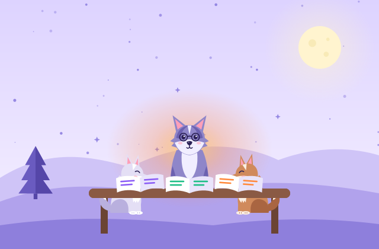
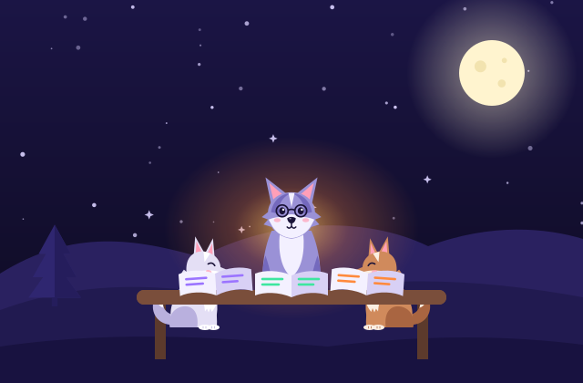
A channel per subject, a voice room for exam night, notes passed straight between classmates. No accounts for anyone.
A safe chat for study groups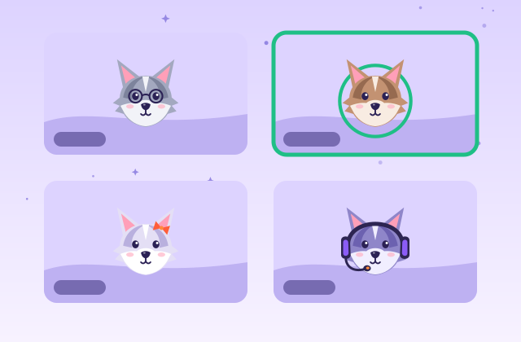
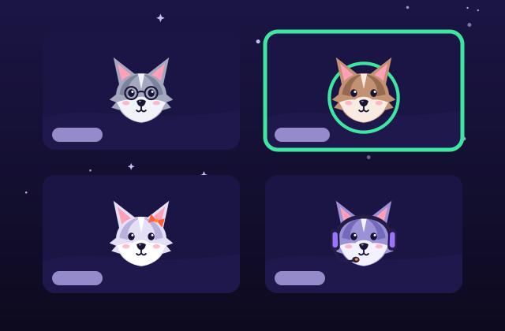
Grandpa opens a link and he is in. Video with the whole family, no app store, no password to forget.
Group video call, no account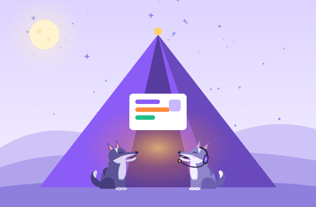
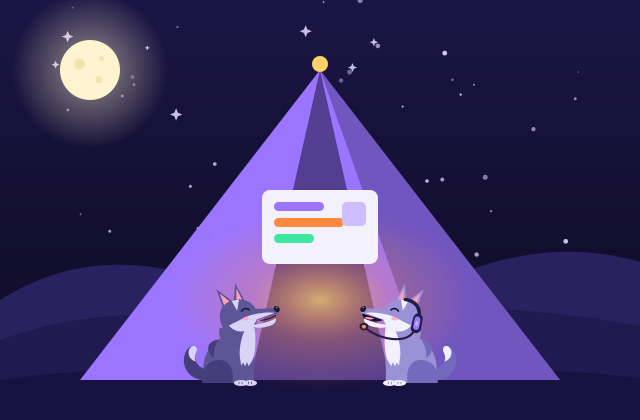
A quick room for a small team with nothing in the middle: no workspace to sign up for, no data held by a provider.
Private group voice callsTwo approaches
Both approaches are good at different things. Server based apps are great for big communities, message history and reaching friends who are offline. A direct, peer to peer den is for small groups who want nothing in the middle.
| Topic | Server based chat apps | howlden (direct) |
|---|---|---|
| Where messages go | Through the provider's servers, which store and forward them | Straight between the members' browsers |
| Account | Usually an email or a phone number and a password | A local profile on your device: username, avatar and identity key |
| Group size | Large communities, thousands of people | Up to 5 people per den, or just you and one friend |
| Friends who are away | Messages wait on the server until they come back | Everyone chats while online. History syncs from members who are online |
| How people join | Public servers, search and invite links | Invite only. Nothing to discover |
| Encryption | Depends on the app: to the server, or end to end | End to end by WebRTC, plus an optional passphrase |
| Install | An app, or the browser | The browser. Installing is optional |
| Moderation and bots | Often rich: roles, bots, moderation tools | Kept simple, for small groups who know each other |
| Who runs it | The provider runs and pays for the servers | Nobody. The members' browsers do the work |
Want the long version? Read peer to peer chat explained or encrypted group chat for free.
Up to 5
In a den, everyone is linked to everyone. With 4 members that is 6 links, with 5 members it is 10. Each member sends their voice and video to each of the others, so upload bandwidth grows with the size of the pack. Audio is light; video with 5 cameras on asks a lot of a home connection.
Eight is where a mesh still feels good on ordinary connections. For bigger groups, a server based tool is the honest answer, and that is fine.
FAQ
Including the limits. A den is not the right tool for everything, and we would rather you know before you invite your pack.
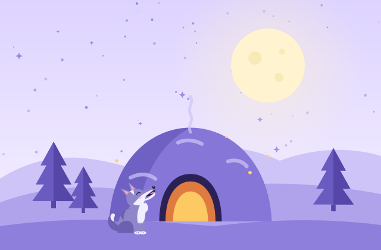
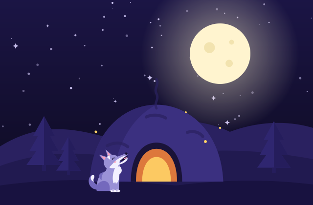
Yes. The site and the app are static files on GitHub Pages, and once the page is loaded your messages, voice, video and files go directly between browsers. To find a route, each browser asks a public STUN server one question, "what is my public address?". When no direct route exists, an optional TURN relay forwards encrypted packets it cannot read. No server of ours ever sees your conversations.
No email, no password and no phone number. You create a local profile: a username, an avatar and a cryptographic identity key (Ed25519 where the browser supports it), all made in your browser and kept on your device. The dens you join see your name, your avatar and your public key, nothing else.
Up to 5, or just two of you. A den is a full mesh: every member sends their audio, video and messages to every other member directly. That keeps everything private, but upload bandwidth grows with each person, so for big communities a server based tool is the better fit.
Yes, to talk everyone has to be online at the same time, because there is no server holding messages. When you come back, members who are online share the messages you missed, but if nobody is online the den is quiet.
Most often both of you are behind a strict NAT (some office, school, hotel and mobile carrier networks). Then a direct connection is not possible and you need a TURN relay. howlden tells you in plain words when this happens, and you can add your own TURN server in Settings.
Yes. WebRTC encrypts every connection end to end with DTLS (and SRTP for audio and video). You can add a den passphrase for a second layer, and compare the connection fingerprint to make sure nobody is in the middle. Your security still depends on your device: encryption cannot protect a device that is already compromised.
No. A den has no public address and is not listed anywhere. To get in, someone needs an invite from a member, and the member who invited them has to accept their reply code. A link that leaks is not enough on its own.
Your local profile, identity key and dens live in your browser, so clearing site data removes them. There is no server copy to restore from, which is exactly the point, so save an encrypted backup file from Settings first: you can import it on any device, and only your backup password opens it.
Yes, in modern mobile browsers on Android and iOS, with text, voice and video. Screen sharing from a phone browser is limited by the phone, not by howlden.
Yes. It is free, MIT licensed and has no ads and no tracking. The code is on GitHub, so anyone can read how it works.
Guides
Plain language guides about private chat, voice and video in the browser.
Open a den, send one link, and you are around the campfire in under a minute. No account to make, nothing to download, no server of ours.
Open howlden in your browser